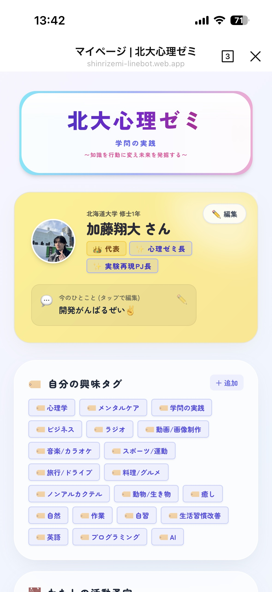
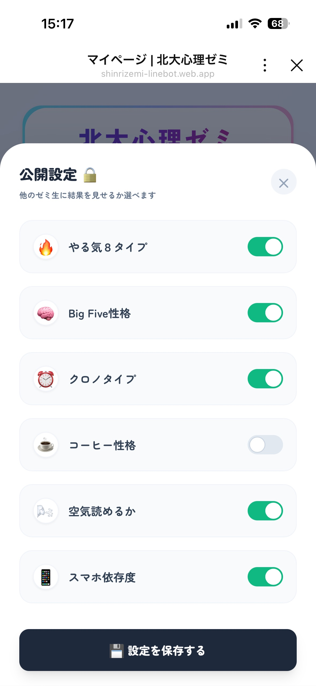
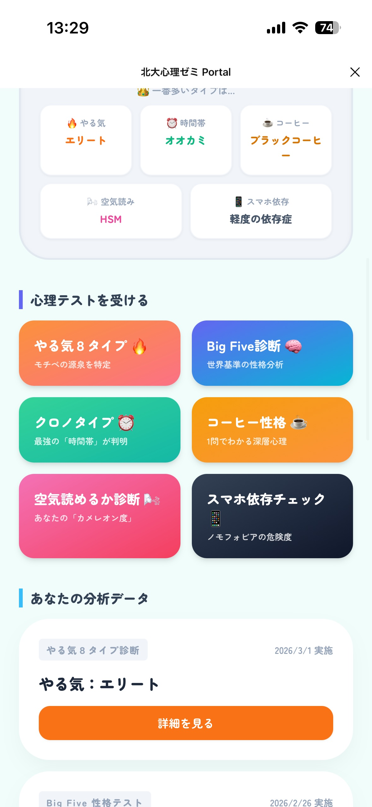
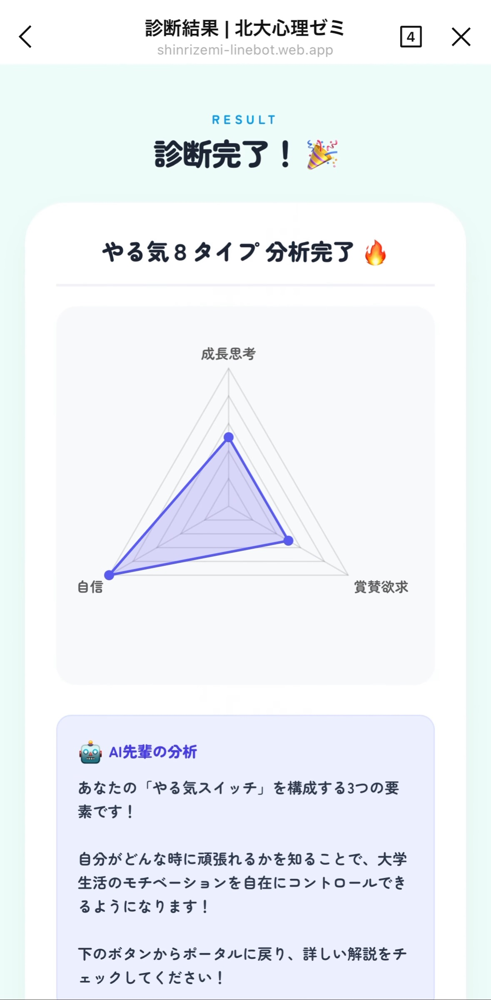
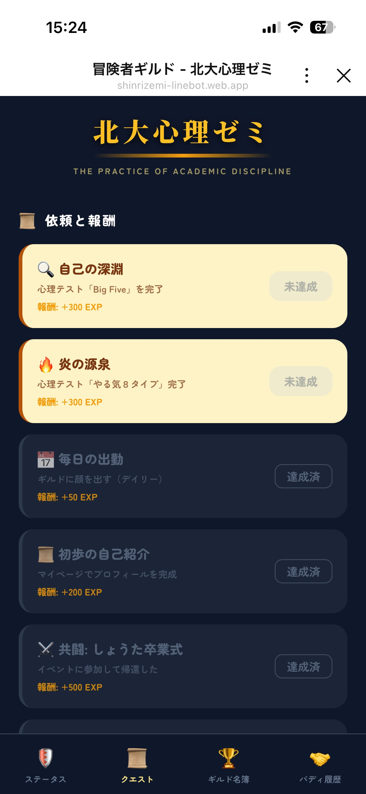
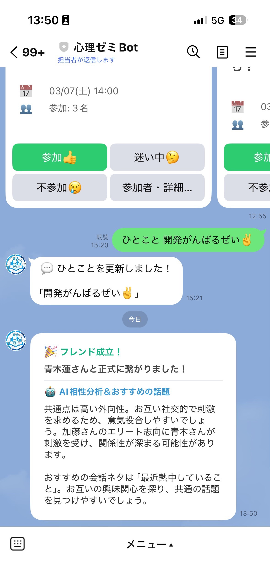
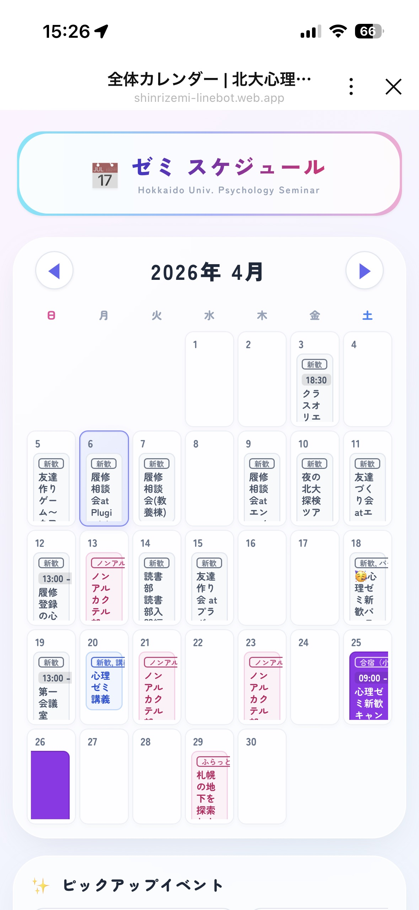
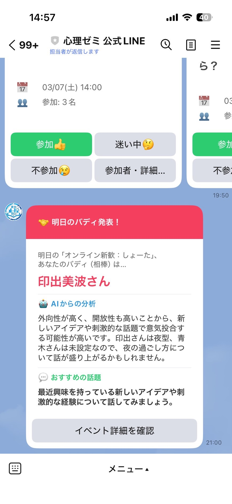
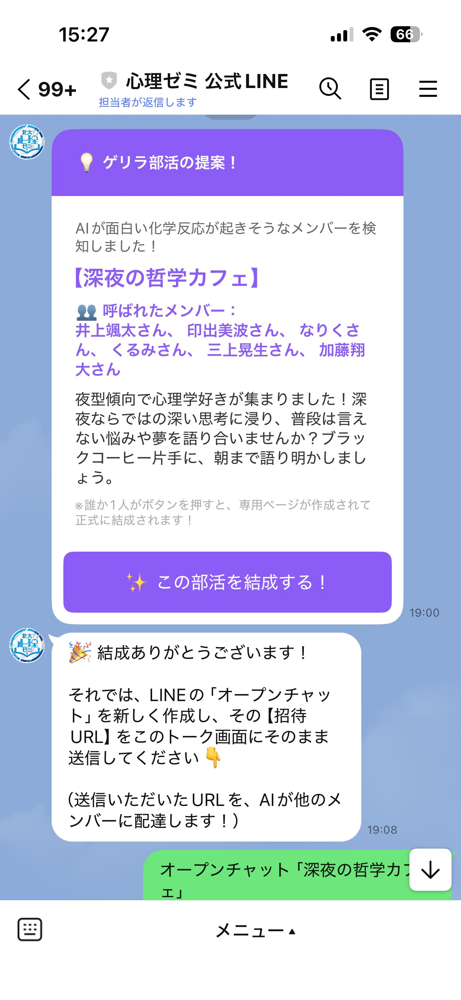

まずはここから！
「マイページ」＆「公開設定」
一番最初にお願いしたいのがプロフィールの登録です！登録すると、あなただけの「メンバーズカード」が発行され、最新機能が使えるようになります。
メニューの「マイページ」を開き、右上の「✏️編集」から名前や興味タグを入力！
NEW「🔒公開設定」から、他のゼミ生に見せる診断データを選ぶことができます。（安心設計！）


画像を ./images/step1-3.png に配置

公開設定のスクショ
./images/step1-4-privacy.png
💬 「今のひとこと」をつぶやこう
マイページからひとことを更新すると、トーク画面に送信され、AIが面白く反応してくれます！
自分を深く知る！
「心理テスト」を受けよう
メニューの「心理テスト」から、ゼミ独自の診断テスト（Big Five、クロノタイプ、やる気タイプ等）を受験できます。

画像を ./images/step2-1.png に配置

画像を ./images/step2-2.png に配置
🤖 テスト結果がAIの分析に直結！
ここで受けたテスト結果は、後述する「フレンド相性分析」や「ゲリラ部活の自動マッチング」のデータとして使われます！たくさん受けるほどゼミが楽しくなりますよ✨
ゼミの活動がゲームに！
「冒険者ギルド」
メニューの「ギルド」が、RPG風の『冒険者ギルド』に進化しました！

クエスト画面
./images/step3-2-quest.png
毎日出勤 ＆ クエスト達成でEXP獲得！
1日1回のログインや、クエストを達成して経験値（EXP）を稼ごう！レベルアップするとギルド名簿でランキング上位に！
リアルで繋がる！
「デジタル名刺」交換
ゼミのイベントで新しい人と会ったら、マイページの「デジタル名刺を見せる」をタップ！
QR表示
./images/step4-1-qr.png

AI相性分析
./images/step4-2-friend.png
相手に読み込んでもらい、「申請」→LINEで「承認」するとフレンド成立！
成立した瞬間、お互いのLINEに「AIからの相性分析＆おすすめの話題」が届きます！
※交換したフレンドは、ギルド画面の「繋がった仲間たち」に記録されます！
予定管理も賢く！
「カレンダー＆スマート通知」
メニューの「カレンダー」からゼミのイベントを確認・参加登録できます。さらに、賢いスマート通知機能を搭載！

カレンダー画面
./images/step5-1-cal.png
-
🎯
興味タグ連動通知
マイページで設定した「興味タグ」に一致するイベントが企画された時だけ、LINEに通知が届きます。興味のないイベントの通知で邪魔されることはありません！ -
⏰
前日リマインド
「参加」にしたイベントは、前日の夜にLINEでリマインダーが届くのでうっかり忘れを防げます。
AIが巻き起こす化学反応
「バディ＆ゲリラ部活」
ただの予定管理ではありません！AIが裏で暗躍し、ゼミ生同士の化学反応をプロデュースします。

AIバディ通知
./images/step6-1-buddy.png

ゲリラ部活
./images/step6-2-guerilla.png
イベント前夜の「AIバディ」
イベント前日のリマインドと一緒に、AIが参加者の中から「最高の相棒」を勝手にマッチング！おすすめの話題も教えてくれるので会話のネタに困りません。
突然の「ゲリラ部活」提案
「夜型×サウナ好き」など面白い化学反応が起きそうなメンバーをAIが検知すると、突然LINEにグループ結成の招待状が届きます！
さあ、まずはメニューの
「マイページ」
から冒険の準備を始めましょう！🚀
わからないことがあれば、トーク画面でAIに直接話しかけてね！